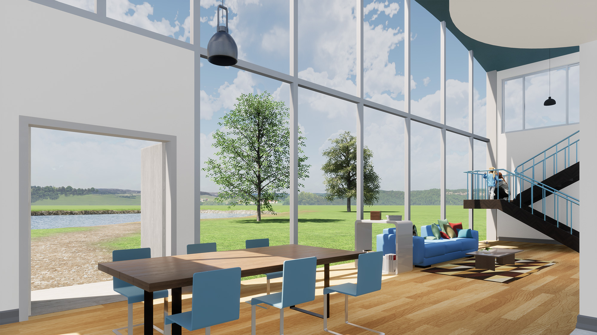
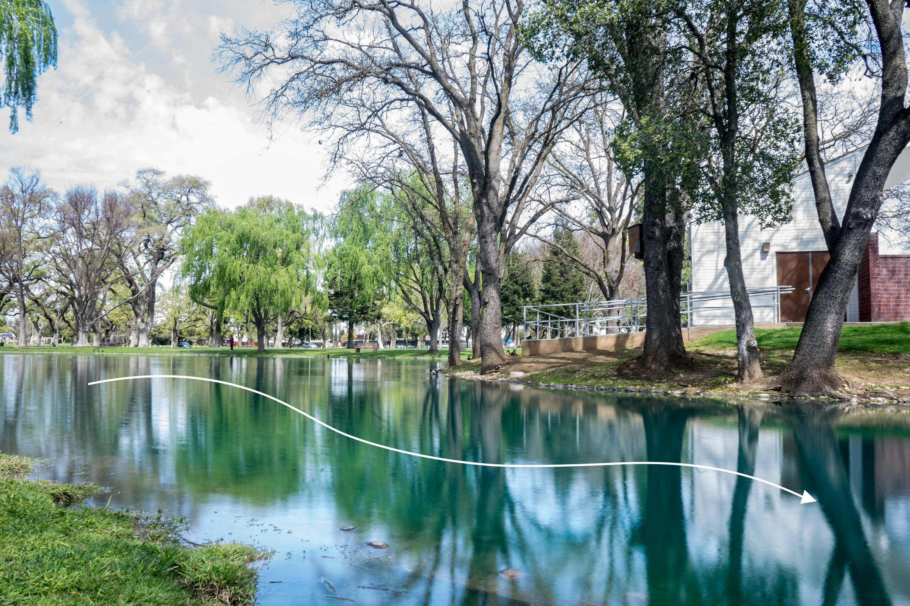
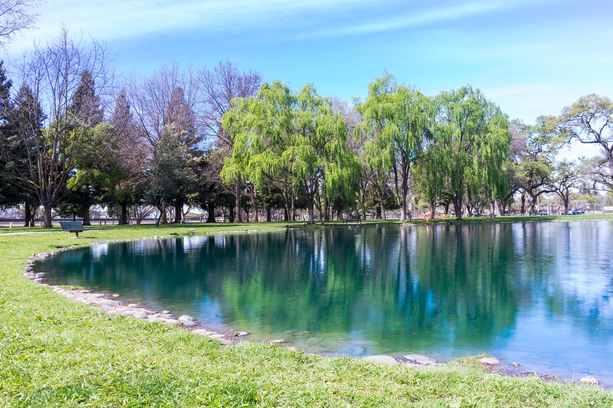
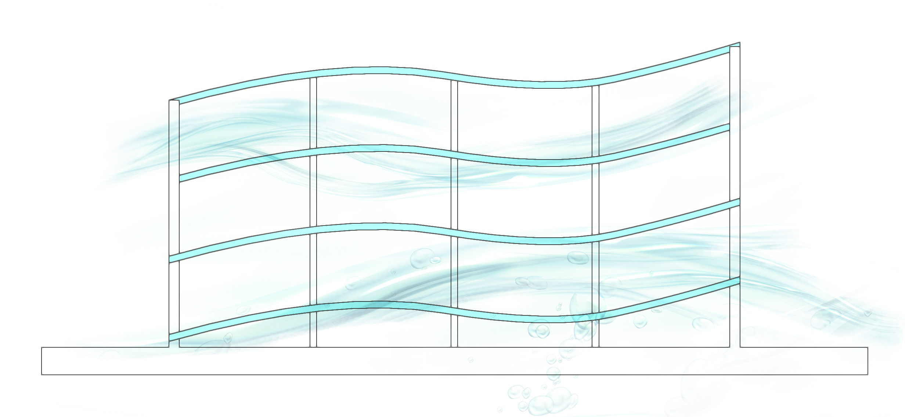
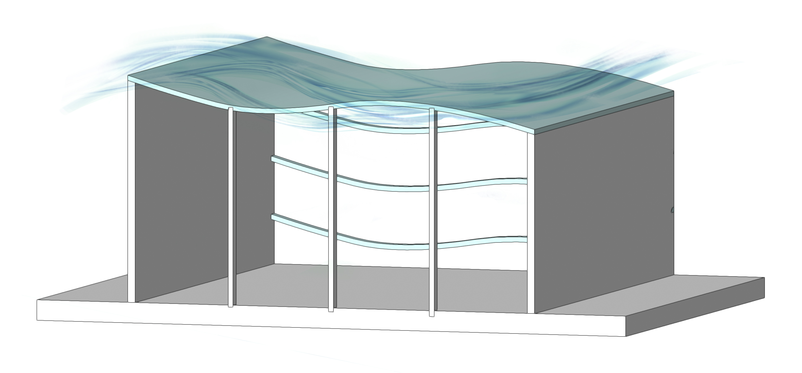
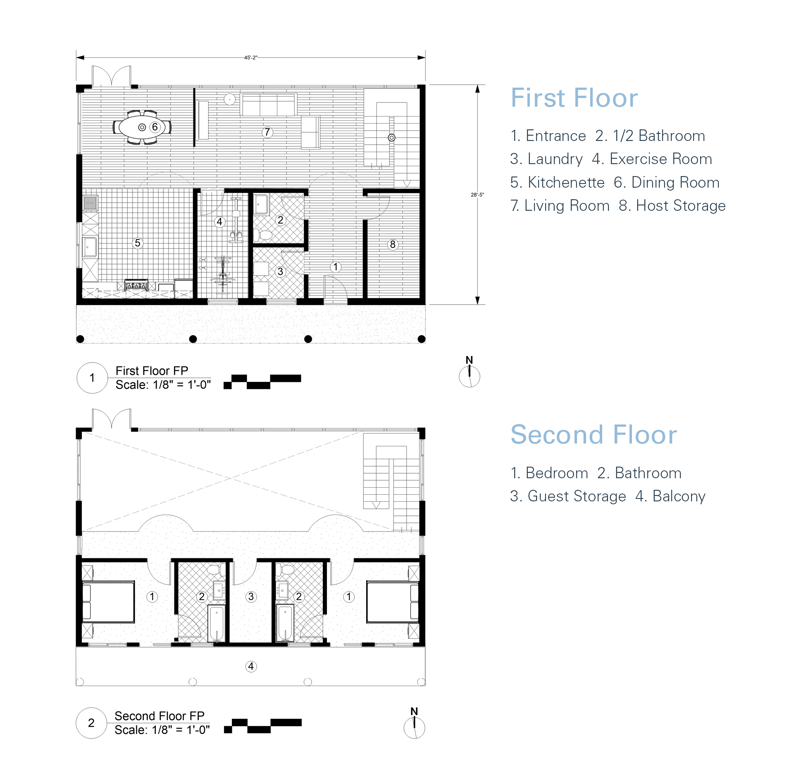

Elk Grove Airbnb
I used sketching, drafting, and eventually modeling with a CAD/BIM program to create a dwelling unit for the Airbnb competition. I chose Elk Grove, California, a quiet and diverse city, as the location of this project. And I would like to design an Airbnb nearby Elk Grove Park which consisted of a beautiful lake and natural environment. Therefore, the natural environment in Elk Grove was one of the features that attract people to visit.
Design Concepts
I decided to convey the theme of nature in my project, and I utilized a curved shape as the house’s roof and decorations to create little wave shapes. However, there was no huge up and down on the wave shape because I would like to express a feeling of calm.
   Structure Documents
When building the floor plan of the project, I hoped the viewers would have a good view when they looked outside. Therefore, I placed the living room and dining room at the north side of the house because the living room and dining room were more likely to need to have a good view.
Please click for Getting more information about this project
Lessons Learned
I learned that there are so many requirements when designing a building. For example, most rooms must have smoke detectors, however, some spaces, such as the kitchen and bathroom don’t need to have smoke detectors. Moreover, I also learned that working with both 2D and 3D views. This means sometimes, a view looks good on a 2D view, but it looks bad when it becomes a 3D space. Therefore, it is important to work with both 2D and 3D in order to have a better visual effect. This project made me explore a lot about the entire workflow and processes that need to create an efficient interior space.